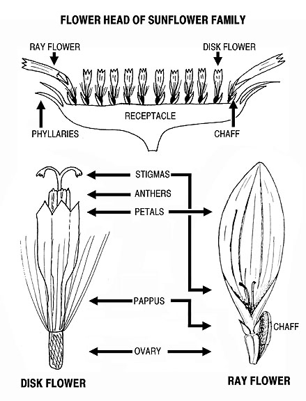
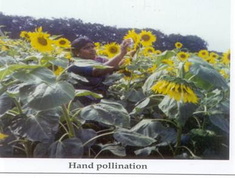
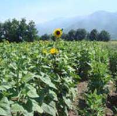
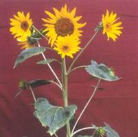
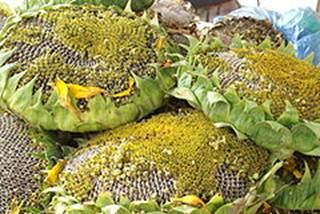

GPBR112 :: Lecture 15 :: SEED PRODUCTION IN SUNFLOWER

Sunflower is a common oilseed of India with wider utility. It is used as a source of edible oil, and as raw material for agri -based industry. Botanically it is known as Helianthus annus and belongs to the family asteraceae. It is a cross pollinated crop, insects (honey bees) are the pollinating agents. The crop has got two types of flowers viz. ray and disc florets. Seeds set in disc florets which are bisexual but exhibit self incompatibility due to protoandrous nature of the flower.
Botany of flower
Inflorescence is a head, consisting of pistillate or sterile ray florets at the periphery and central hermaphrodite, disc florets. The involucre is bract. The pappus is calyx or calyx is modified into two papus scales. The five petals are united to form corolla tube. Stamens are free and attached to the base of corolla. Five anthers unite to farm anther tube and style is inside the anther tube and stigma bilobed.
Anthesis and pollination
The disc florets are protandrous. Flower opening starts from outer whorl and proceeds towards centre of head. The head bloom within 5-10 days. The pollen grains are viable for 12 hours. Anthesis take place at 5-8 a.m. Self incompatibility operates leading to cross pollination.

Varietal seed production technique
Open pollination under isolation is the common method of varietal seed production.
Varieties
CO 1, CO 2, Morden, K1, K 2, EC 68414, EC 68415
Stages of seed multiplication
In sunflower seed is multiplied adopting three generation system, as breeder seed ,foundation seed and certified seed as the crop is often cross pollinated crop where the chances for genetic contamination is high.
Varietal renovation method (Pustovit model)
- In open pollinated variety, selection of superior plants are made based on the quality characters viz., plant yield, 100 seed weight and oil content.
- The selected plants are harvested separately
- Then they are raised in rows individually
- Seeds from promising plants are collected and this form the super-elite seeds
Causes for ill filled seed
a) Pollination
It is a cross pollinated crop, normally the insect activity is less. For increasing the insect activity bee hives should be kept in the seed production plot in adequate quantities. The insect activity depends on the pollution and insecticides application. If insect activity is less that leads to poor seed setting and formation of ill filled seeds.
b) Development of axillary flowers
Normally the axillary flowering takes place during the summer because of the high intensity of light. So these type of axillary buds receive the nutrients and assimilate whereas the main head does not get the required quantity of assimilates for seed set there by ill fillings occurs.
d) Self incompatibility
Presence of self incompatibility in sunflower also leads to poor seed set and ill filled seeds.
Technology for increased seed set
- Pollination behavior: Sunflower is a cross-pollinated crop. Two types of flowers are available. They are ray and disc flowers. Ray flowers are unisexual while disc flowers are bisexual.
- Pollinating agent : Honey bees
Popular varieties
In Tamil Nadu, Morden, COI,CO2,CO3, K1, K2 , CO4 are the popular varieties for commercial purpose .
Season
April to May is highly suitable for irrigated seed crop. The flowering should not coincide either with rain or high RH as it will wash out the pollen and the maturation should coincide with dry weather.
Land requirement
The land should be fertile and problem soils will lead to low pollen fertility and will adversely affect the quality and the seed set will be poor. The previous crop should not be the same crop to avoid the occurrence of volunteer plants and if to be the same crop it has to be the same variety and should be certified and has to be accepted for certification. The field should not have any volunteer plants.
Field Standards (Isolation)
General: 1. Sunflower field should be isolated from contaminants as follows
Contaminants |
Minimum distance(meters) |
|
Foundation stage |
Certified stage |
|
Fields of other varieties and the same variety not confirming to varietal purity requirements for certification and wild sunflower |
400 |
200 |
In sunflower differential blooming dates for modifying the isolation distance is not permitted
Seed and sowing
- For production of foundation seed, breeder seed is used as the base material ,while for certified seed, foundation seed should be used as the base material
- The seed used should be from authenticated source with tag and bill.
- The required seed rate will be 8-10kg /ha or 3-4kg/ acre. (Morden 80kg/ha)
- The seeds are sown at a spacing of 30 x10 cm for the variety morden and at a spacing of 60x20 cm for other varieties and are dibbled at a depth of 2-4cm.
- In the main field seeds are sown either in ridges and furrows or under beds and channels.
Presowing seed treatment
- The seeds are given with any one of the seed treatment or in combination
- Fresh seeds of sunflower exhibit physiological dormancy which could be broken by soaking the seeds in 300ppm ethrel for 8h or 0.5% KNO3 for 16h. Moist hydration of seed with water for 24h followed by dry dressing with thiram @2g kg-1 of seed improved the productivity of the seed.
- Seeds are soaked in 2% ZnSO4 for 12h with a seed to solution ratio of 1:0.06 and are dried back to their original moisture content of 8-9% .This management could be used both for dryland agriculture as well as gardenland.
- As an ecofriendly treatrment seeds are also fortified or hardened with 1% moringa leaf extract for 16h with a seed to solution ratio of 1:0.06 and are dried back to their original moisture content of 8-9%.
- Seeds are dry dressed with bavistin @2g/kg of seed to protect against seed borne pathogens and soil borne pathogen. Seeds are also treated with azospirillum @50g/kg of seed to fix atmospheric N.
- Any one of these treatment or combination of treatment is adopted for better productivity. On adoption of sequence of treatment physiological should be followed with physical seed treatment.
Nutrient application
At last ploughing apply 12.5 tonnes of compost per hectare. The fertilizer requirement of seed crop is 80:40:40 kg of NPK, in which 40kg of N and full dose of P and K is applied as basal, while 40kg of N is applied at the time of earthing up i.e. 40-45 days after crop growth..The seed crop is also sprayed with 2% DAP or 20ppm NAA at 30and 60 days after sowing. In case of deficient soils the crop is sprayed with 0.5% Borax at button formation stage.
Micronutrients deficiency
Zn and Fe composition is very important for the proper seed set in sunflower Zn is responsible for the production of IAA. Fe deficiency leads to sterility of the pollen.
Weeding
Apply of fluchloralin@ 2l/ha as pre-emergence herbicide to control the growth of weeds up to 20-25 days. One hand weeding is done at the time of button stage to keep the field free of weeds. Weeding after head formation stage is not economical. On organic production, 2 hand weeding at seedling stage and other at boot leaf formation will keep the field weed free.
Supplementary pollination
- Due to lack of honey bees, seed setting will be poor. Hence critical or additional pollination is given to the crop for effective seed setting by
- Rubbing the heads of two neighbouring plants with each other.
- It is done during mid flowering stage (i.e 58-60 days of planting for long duration varieties and 45-48 days for short duration varieties) at alternate days between 7-11 a.m for 2 weeks.
- Hand pollination: The heads are rubbed with palm or muslin cloth so that pollination can be enahnced.
- In hybrids, the palm is first gently rubbed on the male parent flowers and then on the female line to transfer the pollen.

- Keeping of bee hives 5 ha-1
Foliar application
At head opening stage 2 % D.A.P and 20 ppm N.A.A. sprayed 2 times on 30th and 60th day after sowing for effective seed setting.
Irrigation
The crop should be irrigated once in a week for enhanced seed set and formation of bolder grains. The critical stages of irrigation are primordial initiation stage, vegetative stage, milky and maturation stage. If the irrigation is withheld in these stages seed set will be poor and seed size will be reduced.
Pest and Disease management
Common pests and diseases |
Management techniques |
Cut worm |
Chlorpyriphos (20EC) @ 3.75 l/ha |
White fly |
Imidacloprid @ 0.1ml/lit |
Thrips |
Phosphomidon 0.03% |
Tobacco caterpillar |
Endosulphan 0.07% or NSKE 5% or |
Capitulum borer |
Endosulphan 0.07% or Helicoverpa NPV @ 250 LE/ha. |
Alternaria blight and leaf spot |
Mancozeb 0.3% |
Rust |
Zineb 0.2% |
Downy mildew |
Metalaxyl 25WP |
Head rot |
Copperoxychloride@0.4% or mancozeb 0.3% combined with endosulfan (0.05%) |
Roguing
Plants rogued from their vegetative phase to harvesting, based on plant, height, head size, branching habit, number of heads and colour of seeds.

Field standards
Factor |
Maximum permitted (%) |
|
|
FS |
CS |
Off types at and after flowering |
0.10 |
0.20 |
Objectionable weed |
None |
None |
Plants affected by downy mildew |
0.050 |
0.50 |
Plants infested with orabanche |
None |
None |
Seed Certification
Number of Inspections
A minimum of three inspections shall be made as follows:
1. The first inspection shall be made before flowering on order to verify isolation, volunteer plants, and other relevant factors,
2. The second inspection shall be made during flowering to check isolation, offtypes and other relevant factors
3. The third inspection shall be made at maturity and prior to harvesting to verify true nature of plant and other relevant factors
Bird scaring
At the time of maturation birds will create problem due to their feeding habit. Hence, from the time of milky stage of the seed proper protection should be given against birds as it will lead to reduction in seed yield upto 80 per cent.
Harvesting
Change of thalamus colour from green to yellow is the visual symptom of physiological maturation. Heads are harvested as once over harvest.

Threshing
The earheads are dried under sun and threshed with fliable stick for extraction of seeds The moisture content of seed at the time of threshing will be 15-18%.On large scale production sunflower threshers are used, but care should be given to avoid mechanical damage, which in turn will reduce the seed quality and storability.
Drying
The seeds are dried to 8=10 % moisture content either under sun or adopting mechanical driers for long term storage as the seeds is orthodox in nature.
Processing
Mechanical grading can be done with cleaner cum grader, which will remove the undersized immature and chaffy seeds .The middle screen size should be 9/64” round perforated sieves. The size can vary depending on the type of seed. In sunflower the graded seeds also can be upgraded through specific gravity separator for improvement in seed quality characters. Even the quality of seed lots having 5-10% lesser germination than MSCS level can be upgraded through simple specific gravity separation
Seed treatment
The seeds are infested with several storage pests, to protect against these pests the seeds are given protective treatment with bavistin @2g/kg of seed.
Seed packing
Seeds are packed in gunny bag for short term storage while in HDPE and polylined gunny bag for long term storage.
Storage
The treated seed can be stored up to 10 months provided the seeds are not infected with storage pests. Seed can be stored up to 2 years if the seeds are packed in moisture containers and are stored at low temperature .The godown should be kept clean as the possibility of secondary infestation with Trifolium (red flour weevil ) is much in these crop.
Seed standard
The processed seed should have the following seed quality characters both for certification and labeling.
Seed Standard
Factor |
Standards for each class |
|
FOUNDATION |
CERTIFIED |
|
Physical purity (min.) % |
98 |
98 |
Inert matter (max.) % |
2 |
2 |
Other crop seed (max.) % |
None |
None |
Germination (min.) % |
70 |
70 |
Huskless seed (max.) (By number) |
2.0% |
2.0% |
Total weed seeds (max.) |
5/kg |
10/kg |
Objectionable weed seed |
None |
None |
Seed infested with Orabanche (max.) |
None |
None |
Moisture content (%) |
|
|
a. Previous container (max.) |
9.0 |
9.0 |
b. Vapour proof container (max.) |
7.0 |
7.0 |
Mid storage correction
The seeds loose their quality during storage due to deterioration and pest infestation, when the germination falls below 5-10 % of the required standard the seeds are imposed with midstorage correction, where the seeds are soaked in double the volume of 10-4 M solution of potassium dihydrogen phosphate (3.6mg/lit of water) for 6 hours and the seeds are dried back to original moisture content (8-9%).
Hybrid seed production in sunflower
- Hybrids are produced by employing cytoplasmic genetic male sterility.
- The male sterile female and male parents are raised in BSH 3, 1:6, KBSH 1, 1:4 ratio under 400 m isolation.
- Seeds are produced by transferring the pollen of male parent to the female parent with the help of honeybees reared at 5 hives / ha.
Hybrids
BSH -1 = CMS 234 A x RHA 274
KBSH 1 = " x 6 DI
MSFH 1 = MHS 71 x MHR 48
MSFH 8
MSFH -17
TCSH 1 = CMS 234 A x RHA 272
Season : June - July, October - November
Isolation distance
Foundation seed Certified seed
Hybrids 600 m 400 m
Seeds and sowing
Seeds are sown in ridges and furrows
Seed rate : Female 12 kg /ha and Male 4 kg/ha.
Spacing
60 x 30 cm (hybrids)
Planting ratio : 8:1 or 4:1
Border row : two
Manures and fertilizers
Compost : 12.5 t/ha
NPK : 60:45:45 kg /ha
Supplementary pollination
- As in varieties
In hybrids, the palm is first gently rubbed on the male parent flowers and then on the female line to transfer the pollen.
- Keeping of bee hives 5 ha-1.
Roguing
Plants are rogued based on plant height, head size and colour of seeds during pre-flowering stage upto harvest.
Field standards
Foundation seeds Certified seeds
Off types 0.1 % 0.2%
Harvesting
The change of head colour from green to lemon yellow is the indication of physiological maturity. The heads are harvested separately first in male and then in female.
Drying, processing and others – as in varieties
Seed standards
The graded seed should possess the following characters for certification and sale as certified/ truthfully labelled seeds
Parameter FS CS
Physical purity (min) % 98 98
Inert matter (max) % 2 2
Germination (min)% 60 60
Moisture content (max)%
(a) Open storage 8 8
(b) Moisture vapour proof Storage
5 5
| Download this lecture as PDF here |